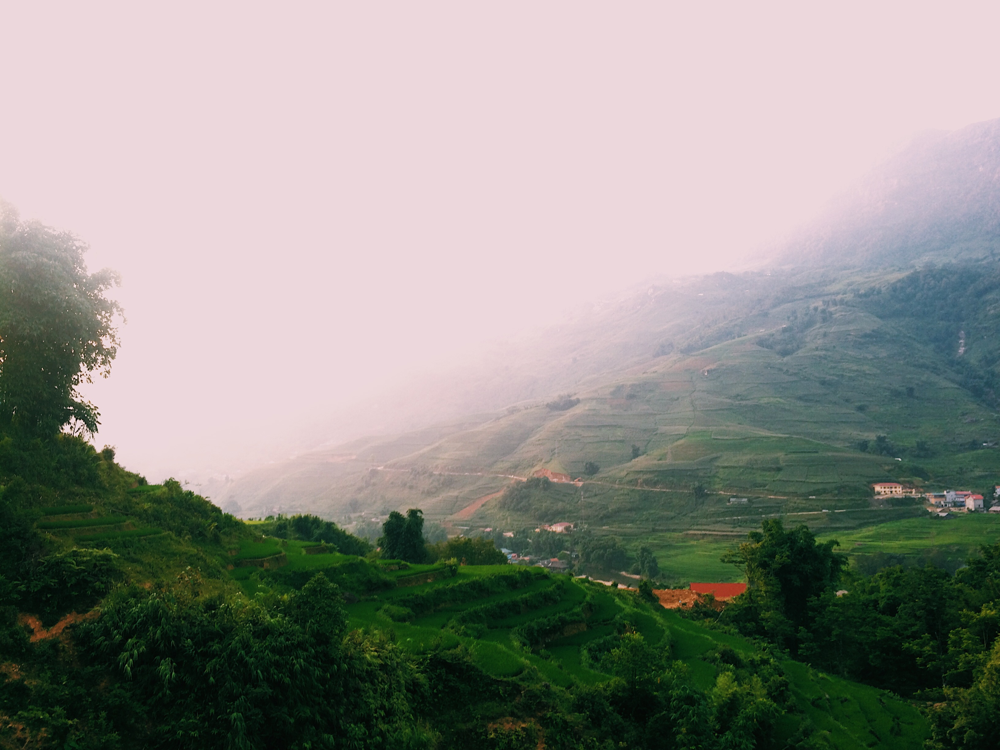
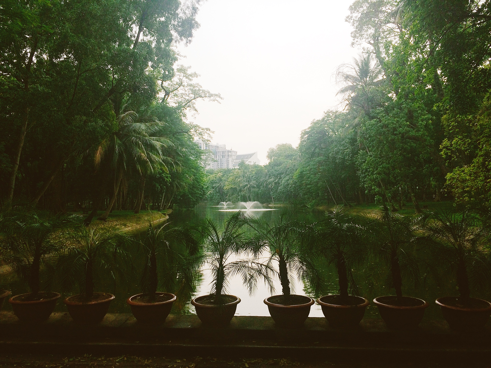
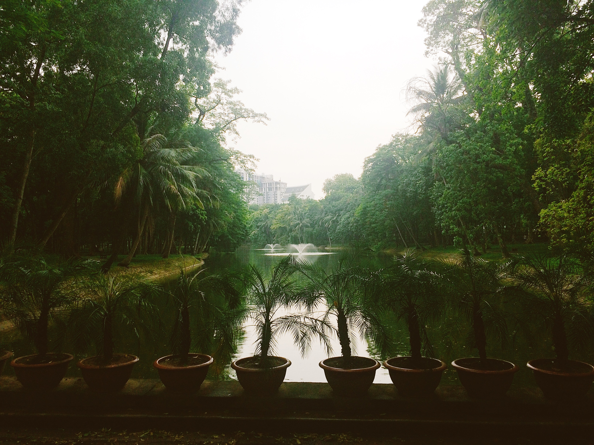
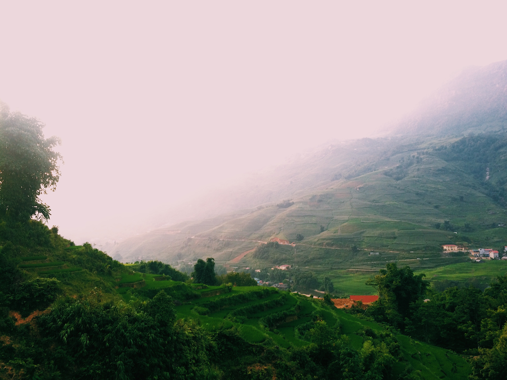
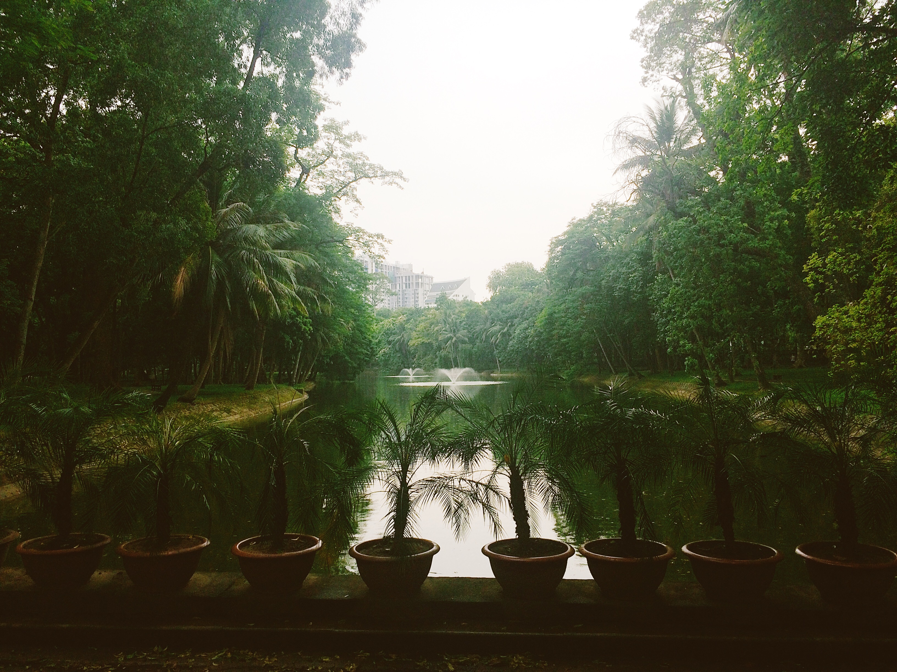

This is my current Spotify-playlist.
I listen to music around 80.000
minutes per year and it is the quickest
way of getting my head in the right space.
Hi. I am Mikaela, from the cold north in Sweden.
I like being creative and these four genres are what
trigger my creativity the most.
I am currently studying to become an
Front End Developer at Medieinstituet, Gothenburg.
It fun and extremely hard, but I like to learn new
things so hopefully I will learn this too.
I went to Vietnam once in 2018 for a month. It was incredible and exhausting.
But a real privilegde to be able to travel like this.



 

But a real privilegde to be able to travel like this.

